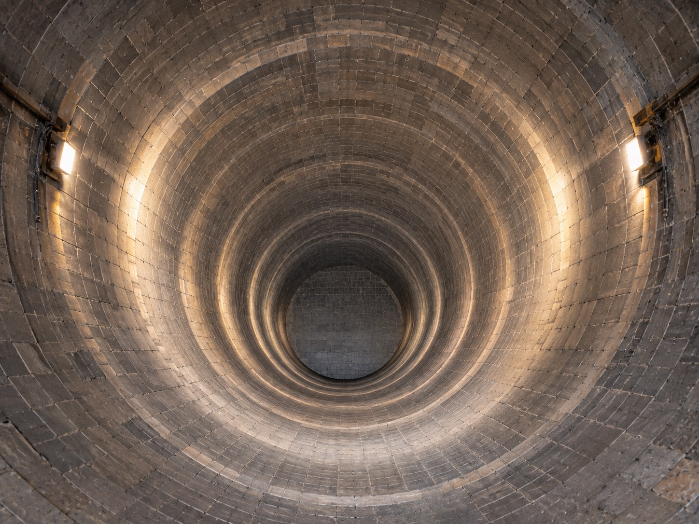

Waktu terbuang, rumus tertimpa,
dan deviasi kecil berujung jutaan kerugian.
Di tengah kebisingan dan debu area kiln shell, mengandalkan spreadsheet manual dan grup chat yang tercecer menciptakan kekacauan data yang memperlambat jadwal firing.
[ERR-01 // ASINKRON]
Data Tersebar & Hilang
Laporan teknisi tercecer di secarik kertas dan obrolan pesan instan tanpa riwayat arsip yang terstruktur saat audit manajemen.
[ERR-02 // HUMAN-ERROR]
Formula Excel Rusak & Tertimpa
Salah ketik persentase di atas 100% atau rumus bobot proyek yang tertimpa secara tidak sengaja merusak perhitungan Kurva-S.
[ERR-03 // JALUR-KRITIS]
Keterlambatan Firing Tak Terdeteksi
Deviasi pemasangan bata tahan api baru disadari saat mendekati hari H, memicu biaya downtime pabrik yang masif.
BABAK II // PUSAT KENDALI TERPADU
Satu Layar Komando Operasional.
Empat Alur Verifikasi Lapangan.
Antarmuka KSD Monitor yang sebenarnya — dirancang untuk memantau kurva telemetri, inspeksi visual ber-timestamp, dan formula refraktori presisi langsung dari lantai pabrik.
WORK ORDER:WO-2026-KL3-089//Penggantian Bata Magnesite Spinel
PELAKSANA:PT TALI Mandiri//STATUS: QC APPROVED
01 // SEBELUM
12 SEP 2026 · 08:30 WIB
Tearing & Shell Cleaning
Ketebalan sisa batu lama 45mm, kerak slag dibersihkan hingga ke pelat shell baja tanpa retakan.
[TAHAP 1 TERVERIFIKASI · QC-104]
02 // PROSES
13 SEP 2026 · 15:20 WIB
Pemasangan Ring & Mortar
Pemasangan ekspansi joint 2mm per 5 ring, kelurusan ring diuji dengan benang ukur dan waterpass.
[TAHAP 2 TERVERIFIKASI · QC-104]

03 // SESUDAH
14 SEP 2026 · 11:45 WIB
Key Jack Locking
Key brick tertutup rapat, tekanan hidrolik jack 150 bar terkunci permanen, clearance aman.
[TAHAP 3 APPROVED · SUPERINTENDENT]
FORMULA STANDAR:ΔV = π (R_outer² - R_inner²) × L
PRESISI TEKNIK DENGAN SAFETY FACTOR +5.0%
Parameter Geometri Shell Kiln
Diameter Luar Shell (D):Ø 4.20 Meter
Ketebalan Bata (t):220 mm (B-32 / B-42)
Panjang Zona Refraktori (L):12.0 Meter
Berat Jenis Material (ρ):2.85 Ton / m³
Jenis Material:Magnesite Spinel
Hasil Kalkulasi Tonase Material
Volume Bersih Refraktori:38.03 m³
Total Berat Material:108.38 Ton
Estimasi Jumlah Keping Bata:4,860 Pcs
Kebutuhan Mortar / Castable:420 Zak (@ 25 kg)
Cadangan Safety Buffer (+5%):113.80 Ton
KODE SPK
ZONA KILN
KONTRAKTOR
TARGET SHIFT
REALISASI
STATUS QC
DOKUMEN
SPK-KL3-01
Transition Zone 1 (STA 12M)
PT TALI Mandiri
8.0 Ring
8.0 Ring (100%)
VERIFIED
SPK-KL3-02
Burning Zone Ring 14-16
Tim Internal Kiln
6.0 Ring
5.5 Ring (92%)
IN PROGRESS
SPK-KL3-03
Nose Ring Castable Curing
Mitra Refraktori
12.0 Ton
12.0 Ton (100%)
CURING 24H
SPK-KL3-04
Tyre #2 Mechanical Alignment
Tim Mekanik Utama
Alignment
0.12mm (Pass)
VERIFIED
CATATAN SERAH TERIMA SHIFT (HANDOVER LOG):
Pekerjaan keying jack ring 15 telah diverifikasi oleh QC Inspector. Tim Shift 3 malam melanjutkan pemantauan pengeringan mortar zona transisi dan persiapan hidrolik uji beban ring 16.
BABAK III // SISTEM MOSAIC
Kejelasan Total di Setiap Sudut Pabrik.
Dirancang spesifik untuk lingkungan semen industri. Berjalan tangguh tanpa bergantung pada kestabilan koneksi internet.
[MOD-01 // TELEMETRI S-CURVE]
Pelacakan Deviasi Real-time
Matematika Kurva-S kumulatif otomatis membandingkan target master schedule terhadap realisasi harian di lapangan.
Kalkulasi Akurat:Delta % Terkini
[MOD-02 // INPUT GUARD]
Proteksi Anti-Human Error
Blokade input otomatis jika persentase di luar rentang wajar (0–100%) atau bobot pekerjaan tidak seimbang, memastikan integritas data audit.
Validasi Otomatis:Zero Formula Corruption
[MOD-03 // ARSITEKTUR OFFLINE]
Offline First PWA
Bekerja di dalam silinder kiln tanpa sinyal radio. Data tersimpan di storage lokal dan otomatis sinkron saat tersambung.
[MOD-04 // EKSPOR RESMI]
1-Klik Export SPK
Cetak laporan rekapitulasi harian berformat PDF resmi bertanda tangan pengawas dalam hitungan detik.
BABAK IV // SUARA LAPANGAN
Suara dari Lintasan Overhaul Kiln
Transkrip langsung dari superintendent mekanik, spesialis refraktori, dan koordinator lapangan.
[STA 00+100 // SHIFT 1]● TERVERIFIKASI QC
"UI-nya minimalis dan to the point. Mandor di lapangan langsung paham cara input foto sebelum dan sesudah bricking tanpa perlu ditraining lama. Tidak ada lagi foto tercecer di grup obrolan."
BP
Bambang Prasetyo
Kiln Mechanical Superintendent
[STA 18.4M // BURNING ZONE]● PRESISI MATERIAL
"Kalkulator refraktorinya presisi luar biasa. Estimasi tonase batu Magnesite Spinel dan zak semen castable untuk nose ring langsung keluar angkanya, tidak perlu coret-coret kertas kalkulator lagi."
RH
Rendra Hidayat
Refractory Specialist
[WAR-ROOM // EVALUASI]● JALUR KRITIS
"S-Curve otomatisnya sangat membantu saat rapat evaluasi shift malam. Manajemen langsung tahu zona mana yang perlu akselerasi sebelum deviasi melebar dan jalur kritis tertunda."
DW
Dwi Wicaksono
Overhaul Project Coordinator
[INSPECTION GATE // STA 24M]● AUDIT ISO 9001
"Sistem audit foto 3-tahap menghentikan kebiasaan menutup pekerjaan sebelum diperiksa. Bukti foto sebelum, saat, dan sesudah tersimpan rapi ber-timestamp untuk bukti garansi vendor."
AS
Agus Santoso
Senior QC Inspector
[SHELL // ALIGNMENT]● DATA INTEGRITY
"Proteksi anti-miskeying mencegah salah ketik fatal. Toleransi shift terkunci otomatis sehingga kurva deviasi proyek selalu akurat saat dilaporkan ke jajaran direksi."
HK
Hendra Kusuma
Plant Reliability Engineer
[KONTRAKTOR // LAPANGAN]● 1-KLIK SPK
"Ekspor rekapitulasi SPK PDF 1-klik memotong waktu administrasi harian dari 45 menit jadi hitungan detik. Kami bisa fokus penuh pada keselamatan dan kerapian pemasangan bata."
FP
Fajar Pratama
Shift Supervisor · PT TALI Mandiri
[STA 00+100 // SHIFT 1]● TERVERIFIKASI QC
"UI-nya minimalis dan to the point. Mandor di lapangan langsung paham cara input foto sebelum dan sesudah bricking tanpa perlu ditraining lama. Tidak ada lagi foto tercecer di grup obrolan."
BP
Bambang Prasetyo
Kiln Mechanical Superintendent
[STA 18.4M // BURNING ZONE]● PRESISI MATERIAL
"Kalkulator refraktorinya presisi luar biasa. Estimasi tonase batu Magnesite Spinel dan zak semen castable untuk nose ring langsung keluar angkanya, tidak perlu coret-coret kertas kalkulator lagi."
RH
Rendra Hidayat
Refractory Specialist
[WAR-ROOM // EVALUASI]● JALUR KRITIS
"S-Curve otomatisnya sangat membantu saat rapat evaluasi shift malam. Manajemen langsung tahu zona mana yang perlu akselerasi sebelum deviasi melebar dan jalur kritis tertunda."
DW
Dwi Wicaksono
Overhaul Project Coordinator
[INSPECTION GATE // STA 24M]● AUDIT ISO 9001
"Sistem audit foto 3-tahap menghentikan kebiasaan menutup pekerjaan sebelum diperiksa. Bukti foto sebelum, saat, dan sesudah tersimpan rapi ber-timestamp untuk bukti garansi vendor."
AS
Agus Santoso
Senior QC Inspector
[SHELL // ALIGNMENT]● DATA INTEGRITY
"Proteksi anti-miskeying mencegah salah ketik fatal. Toleransi shift terkunci otomatis sehingga kurva deviasi proyek selalu akurat saat dilaporkan ke jajaran direksi."
HK
Hendra Kusuma
Plant Reliability Engineer
[KONTRAKTOR // LAPANGAN]● 1-KLIK SPK
"Ekspor rekapitulasi SPK PDF 1-klik memotong waktu administrasi harian dari 45 menit jadi hitungan detik. Kami bisa fokus penuh pada keselamatan dan kerapian pemasangan bata."
FP
Fajar Pratama
Shift Supervisor · PT TALI Mandiri
STREAM LOG LAPANGAN TERVERIFIKASI · ARAHKAN KURSOR UNTUK JEDA
SISTEM SIAP DIGUNAKAN DI LAPANGAN · v3.5 PRODUCTION ENGINE
Perjalanan Menuju Start-up Kiln Tepat Waktu Dimulai dari Satu Panggung Kendali.
Tinggalkan lembar kerja spreadsheet manual yang rawan salah ketik dan grup chat yang tercecer. Mulai pantau Kurva-S real-time, audit foto 3-tahap, dan kalkulasi tonase refraktori dengan akurasi absolut.